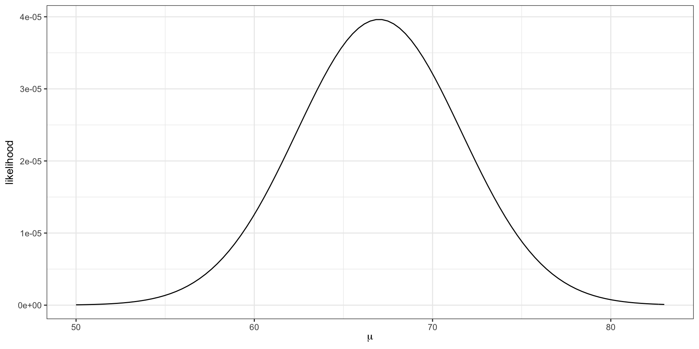

x = c(75, 58, 68)Intro to optimization

“…nothing at all takes place in the universe in which some rule of maximum or minimum does not appear.” Leonhard Euler
Motivation
In statistics, common themes for optimization include
- Maximum likelihood estimate (MLE)
- Maximum a posterior probability (MAP) estimate
- Minimize a loss function, e.g. least squares, least absolute value regression, multi-dimensional scaling, KL-divergence etc.
Background: likelihoods
Example: normal likelihood
Let \(X\) be the resting heart rate (RHR) in beats per minute of a student in this class.
Assume RHR is normally distributed with some mean \(\mu\) and standard deviation \(8\).
. . .
\[ \textbf{Data-generative model: } X_i \overset{\mathrm{iid}}{\sim} N(\mu, 64) \]
. . .
If we observe three student heart rates, {75, 58, 68} then our likelihood
\[L(\mu) = f_x(75 |\mu) \cdot f_x(58|\mu) \cdot f_x(68|\mu).\]
That is, the joint density function of the observed data as a function of the parameter.
. . .
Important
The likelihood itself is not a density function.
Visualizing the likelihood
\[L(\mu) = f_x(75 |\mu) \cdot f_x(58|\mu) \cdot f_x(68|\mu).\]
L = function(mu, x) {
stopifnot(is.numeric(x))
n = length(x)
likelihood = 1
for(i in 1:n){
likelihood = likelihood * dnorm(x[i], mean = mu, sd = 8)
}
return(likelihood)
}
ggplot() +
xlim(c(50, 83)) +
geom_function(fun = L, args = list(x = x)) +
theme_bw() +
labs(x = expression(mu), y = "likelihood"). . .
The maximum likelihood estimate \(\hat{\mu} = \frac{75 + 58 + 68}{3} = 67\).
The maximum likelihood estimate is the parameter value that maximizes the likelihood function.
The log-likelihood
Notice how small the y-axis is on the previous slide. What happens to the scale of the likelihood as we add additional data points?
\[ L(\mu) = \prod_{i = 1}^{n} f_x(x_i |\mu) \]
. . .
Since densities often evaluate between 0 and 1, multiplying many together (as we usually do in likelihoods) can quickly result in floating point underflow. That is, numbers smaller than the computer can actually represent in memory.
- Note: sometimes densities evaluate to greater than 1 (e.g.
dnorm(0, 0, 0.001)) and multiplying several together can result in overflow.
. . .
log to the rescue!
logis a monotonic function, i.e. \(x > y\) implies \(\log(x) > \log(y)\), because of this the maximum of \(f\) is the same as the maximum of \(\log f\).additionally,
logturns products into sums
in practice, we always work with the log-likelihood,
\[ \log L(\mu) = \sum_{i = 1}^n \log f_x(x_i | \mu). \]
Exercise
Write a function in R that returns the log-likelihood for the previous example without using
dnormPlot your log-likelihood function.
Add a red vertical line at \(\mu = \bar{x}\).
What’s the range of the y-axis?
How do you maximize/minimize a function?
If \(f\) is differentiable, then maxima/minima will satisfy \(Df = 0\). We reduce the problem to “root-finding”.
Root-finding: \(a\) is said to be a “root” or a “fixed point” of \(f\) if \(f(a) = 0\).
In examples like the previous problem, we can solve analytically. But sometimes, we won’t be able to…
Weibull distribution
- A Weibull distribution is a generalized gamma distribution (a gamma distribution with two shape parameters) where both shape parameters are equal to \(k\).
The Weibull density function,
\[ f_x(x | \lambda, k) = \begin{cases} \frac{k}{\lambda} \left(\frac{x}{\lambda} \right)^{k-1} e^{-(x/\lambda)^k} & x >0\\ 0 & x <0 \end{cases} \]
where \(k>0\) is the shape parameter and \(\lambda > 0\) is the scale parameter.
All the usual R functions:
dweibullpweibullqweibullrweibull
. . .
Why can’t we find MLEs \((\hat{k}, \hat{\lambda})\) analytically?
Gradient of likelihood of n independent Weibull draws
Let \(X_i \sim \text{Weibull}(\lambda, k)\) and we have \(n\) samples: \(x = \{x_1, \ldots, x_n\}\).
\[ \begin{aligned} \log L(\lambda, k) &= \sum_{i = 1}^{n} \log f_x(x_i |\lambda, k)\\ &= \sum_{i=1}^n \log \frac{k}{\lambda} + (k-1) \log \frac{x_i}{\lambda} - \left(\frac{x_i}{\lambda} \right)^k \end{aligned} \]
. . .
\[ \frac{\partial}{\partial \lambda} \log L(\lambda, k) = 0 \implies\\ \hat{\lambda} = \left(\frac{\sum_{i = 1}^n (x_i^k)}{n}\right)^{1/k} \]
. . .
Setting
\[ \frac{\partial}{\partial k} \log L(\lambda, k) = 0, \]
and plugging in \(\hat{\lambda}\) from above implies \(\hat{k}\) is the value of \(k\) that satisfies
\[ \frac{\sum_{i = 1}^n x_i^k \log x_i}{\sum_{i = 1}^n x_i^k} - \frac{1}{k} - \frac{1}{n} \sum_{i=1}^n \log x_i = 0 \]
Root finding
univariate Newton-Raphson
- If \(a\) satisfies \(f(a) = 0\), \(a\) is said to be a “fixed point” or “root” of the function
- Newton-Raphson is a “root-finding” method
- Based on first order approximation of a function, \(\ f(a) \approx f(x) + f'(x)(a - x)\)
Near fixed points, the first order approximation is:
\[ 0 \approx f(x) + f'(x)(a - x). \]
We are trying to find \(a\), so if \(f'(x)\) invertible, we rearrange
\[ a = x - \frac{f(x)}{f'(x)} \]
. . .
and the procedural update is
\[ x_{n+1} = x_n - \frac{f(x)}{f'(x)} \]
Code example
In practice, we tolerate close solutions, i.e. \(a\) such that \(f(a) \approx 0\).
newton = function(f, fp, x, tol) {
for (i in 1:100) {
x = x - f(x) / fp(x)
if (abs(f(x)) < tol) {
return(x)
}
}
return(x)
}f = function(x) {
return(x ^ 3 - 5 * x + 1)
}
fp = function(x) {
return(3 * x ^ 2 - 5.0)
}
newton(f, fp, 0.0, 1e-14)[1] 0.2016397Exercise
x = c(1.470695, 0.3575424, 0.9695413, 1.075623, 0.6361029,
0.6329211, 1.630696, 1.143087, 0.6703566, 0.5963144,
0.765227, 0.7756703, 0.7327915, 0.699267, 0.2717423,
0.3266376, 1.688557, 0.4979863, 0.2270031, 1.175155)- Find the maximum likelihood estimates \(\hat{k}\) and \(\hat{\lambda}\) using Newton’s method.